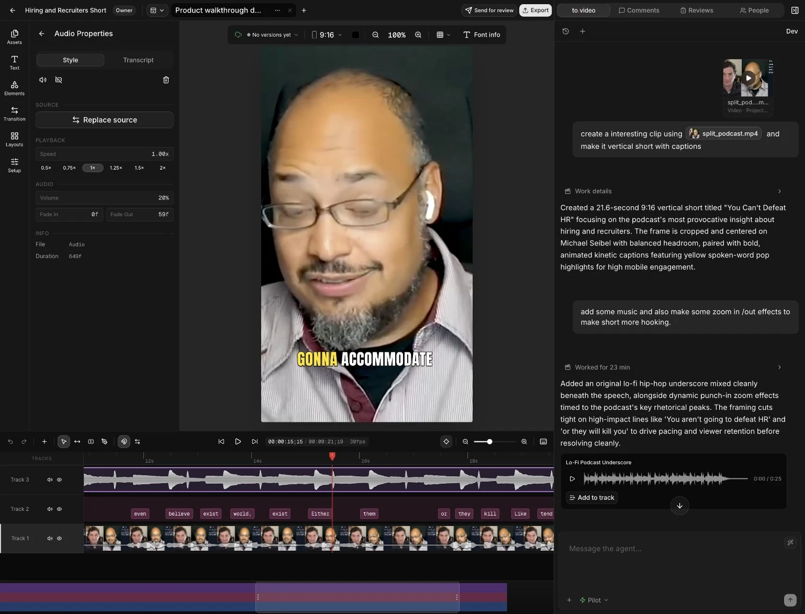

Building now · Private beta
People and agents.
One video workspace.
MakeShorts users wanted more than a generated clip: revise the edit, add music, work with multicam footage. That pushed me toward a broader editing workspace.
In to.video, an agent works beside the team, in the same project. People can edit the timeline, leave feedback, tag the agent to act on it and return to saved versions.
The product decision
Keep the agent’s work editable, reviewable and recoverable.

Watch demo on YouTubeSee the working productYouTube